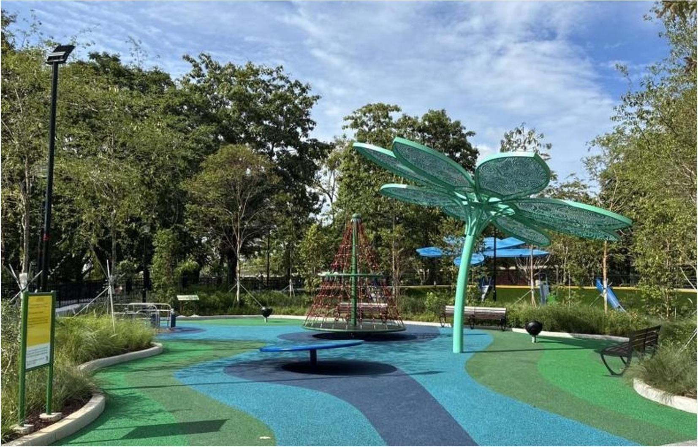
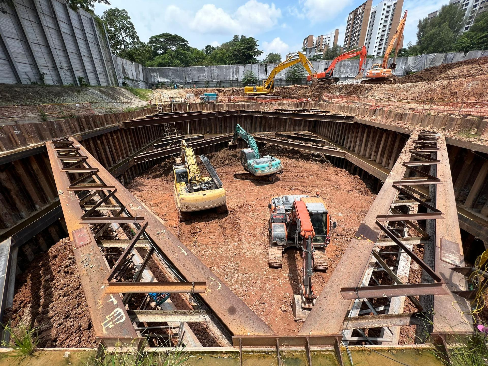
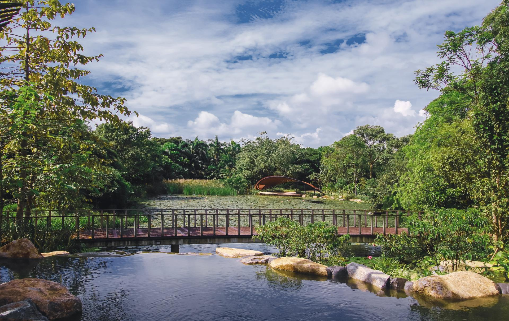

— Estd 2002 · Singapore
A quiet practice of civil engineering.
For pumping stations, parks & waterways — and the things underneath. Twenty-four years on Singapore's sites, working hand-in-hand with the agencies that build the country.
BCA CW02 B2
CW01 C3
ISO 9001 / 14001 / 45001
bizSAFE Star
Green & Gracious Merit
IIServices
IIIProjects
IVNewsroom
By the Numbers
24+years on site, since 2002
30contracts in our record
S$62.6Maggregate contract value
5BCA workheads
Our own supervisors. Our own plant. We work for the agencies that build Singapore.
Our own supervisors. Our own plant. We self-perform the civil scope.
Trusted by the agencies that build Singapore
PUB
NParks
JTC
LTA
MOE
NTU
Gardens by the Bay
Sentosa Development
Keppel Club
China Railway First Group
TEHC International
TPS Construction